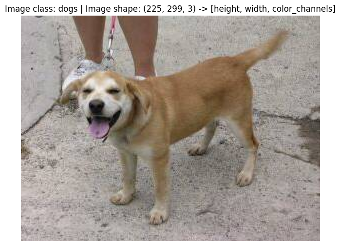
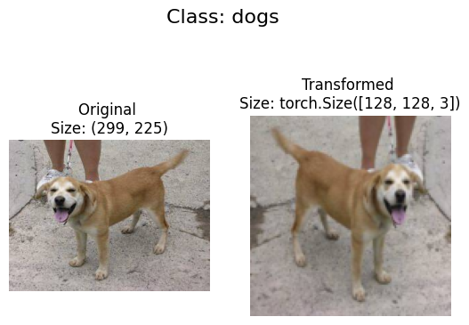
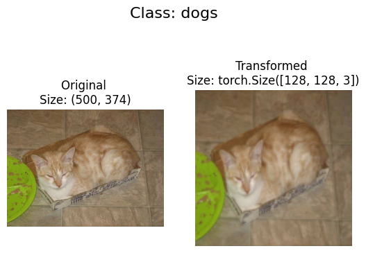
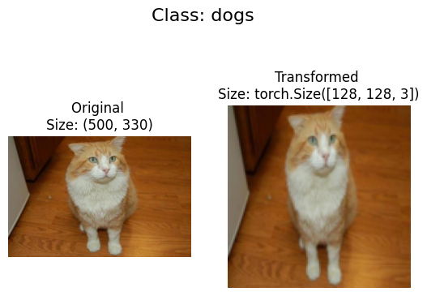
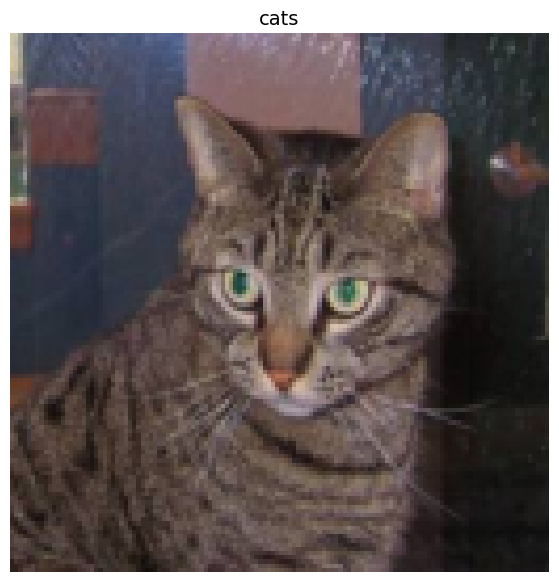
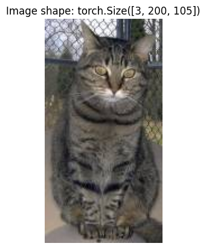
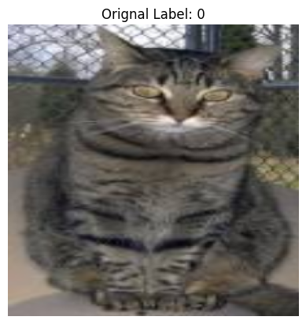
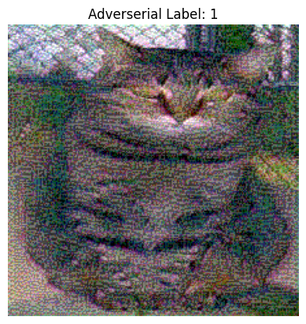

Cats-vs-Dogs¶
[2]:
import torch
from torch import nn
device = "cuda" #if torch.cuda.is_available() else "cpu"
device
[2]:
'cuda'
[3]:
import os
train_dir = "/home/uam/HamdahM/training_set"
test_dir = "/home/uam/HamdahM/test_set"
train_dir, test_dir
[3]:
('/home/uam/HamdahM/training_set', '/home/uam/HamdahM/test_set')
[4]:
image_path = "/home/uam/HamdahM"
[5]:
import random
from PIL import Image
import glob
from pathlib import Path
# Set seed
random.seed(42)
# 1. Get all image paths (* means "any combination")
image_path_list= glob.glob(f"{image_path}/*/*/*.jpg")
# 2. Get random image path
random_image_path = random.choice(image_path_list)
# 3. Get image class from path name (the image class is the name of the directory where the image is stored)
image_class = Path(random_image_path).parent.stem
# 4. Open image
img = Image.open(random_image_path)
# 5. Print metadata
print(f"Random image path: {random_image_path}")
print(f"Image class: {image_class}")
print(f"Image height: {img.height}")
print(f"Image width: {img.width}")
img
Random image path: /home/uam/HamdahM/test_set/dogs/dog.4926.jpg
Image class: dogs
Image height: 225
Image width: 299
[5]:
[6]:
import numpy as np
import matplotlib.pyplot as plt
# Turn the image into an array
img_as_array = np.asarray(img)
# Plot the image with matplotlib
plt.figure(figsize=(8, 6))
plt.imshow(img_as_array)
plt.title(f"Image class: {image_class} | Image shape: {img_as_array.shape} -> [height, width, color_channels]")
plt.axis(False);

[7]:
import torch
from torch.utils.data import DataLoader
from torchvision import datasets, transforms
IMAGE_WIDTH=128
IMAGE_HEIGHT=128
IMAGE_SIZE=(IMAGE_WIDTH, IMAGE_HEIGHT)
# Write transform for image
data_transform = transforms.Compose([
# Resize the images to IMAGE_SIZE xIMAGE_SIZE
transforms.Resize(size=IMAGE_SIZE),
# Flip the images randomly on the horizontal
transforms.RandomHorizontalFlip(p=0.5), # p = probability of flip, 0.5 = 50% chance
# Turn the image into a torch.Tensor
transforms.ToTensor() # this also converts all pixel values from 0 to 255 to be between 0.0 and 1.0
])
[8]:
def plot_transformed_images(image_paths, transform, n=3, seed=42):
random.seed(seed)
random_image_paths = random.sample(image_paths, k=n)
for image_path in random_image_paths:
with Image.open(image_path) as f:
fig, ax = plt.subplots(1, 2)
ax[0].imshow(f)
ax[0].set_title(f"Original \nSize: {f.size}")
ax[0].axis("off")
transformed_image = transform(f).permute(1, 2, 0)
ax[1].imshow(transformed_image)
ax[1].set_title(f"Transformed \nSize: {transformed_image.shape}")
ax[1].axis("off")
fig.suptitle(f"Class: {Path(random_image_path).parent.stem}", fontsize=16)
plot_transformed_images(image_path_list, transform=data_transform, n=3)



[9]:
from torchvision import datasets
# Creating training set
train_data = datasets.ImageFolder(root=train_dir,
transform=data_transform,
target_transform=None)
#Creating test set
test_data = datasets.ImageFolder(root=test_dir, transform=data_transform)
print(f"Train data:\n{train_data}\nTest data:\n{test_data}")
Train data:
Dataset ImageFolder
Number of datapoints: 8005
Root location: /home/uam/HamdahM/training_set
StandardTransform
Transform: Compose(
Resize(size=(128, 128), interpolation=bilinear, max_size=None, antialias=warn)
RandomHorizontalFlip(p=0.5)
ToTensor()
)
Test data:
Dataset ImageFolder
Number of datapoints: 2023
Root location: /home/uam/HamdahM/test_set
StandardTransform
Transform: Compose(
Resize(size=(128, 128), interpolation=bilinear, max_size=None, antialias=warn)
RandomHorizontalFlip(p=0.5)
ToTensor()
)
[10]:
class_names = train_data.classes
class_dict = train_data.class_to_idx
[11]:
img, label = train_data[0][0], train_data[0][1]
img_permute = img.permute(1, 2, 0)
# Print out different shapes (before and after permute)
print(f"Original shape: {img.shape} -> [color_channels, height, width]")
print(f"Image permute shape: {img_permute.shape} -> [height, width, color_channels]")
# Plot the image
plt.figure(figsize=(10, 7))
plt.imshow(img.permute(1, 2, 0))
plt.axis("off")
plt.title(class_names[label], fontsize=14);
Original shape: torch.Size([3, 128, 128]) -> [color_channels, height, width]
Image permute shape: torch.Size([128, 128, 3]) -> [height, width, color_channels]

[12]:
from torch.utils.data import DataLoader
# How many subprocesses will be used for data loading (higher = more)
NUM_WORKERS = os.cpu_count()
# Turn train and test Datasets into DataLoaders
train_dataloader = DataLoader(dataset=train_data,
batch_size=1, # how many samples per batch?
num_workers=NUM_WORKERS,
shuffle=True) # shuffle the data?
test_dataloader = DataLoader(dataset=test_data,
batch_size=1,
num_workers=NUM_WORKERS,
shuffle=False)
train_dataloader, test_dataloader
[12]:
(<torch.utils.data.dataloader.DataLoader at 0x7f1339a57ac0>,
<torch.utils.data.dataloader.DataLoader at 0x7f1339a56860>)
[13]:
img, label = next(iter(train_dataloader))
# Set image size.
IMAGE_WIDTH = 224
IMAGE_HEIGHT = 224
IMAGE_SIZE=(IMAGE_WIDTH, IMAGE_HEIGHT)
# Create training transform with TrivialAugment
train_transform = transforms.Compose([
transforms.Resize(IMAGE_SIZE),
transforms.TrivialAugmentWide(),
transforms.ToTensor()])
# Create testing transform (no data augmentation)
test_transform = transforms.Compose([
transforms.Resize(IMAGE_SIZE),
transforms.ToTensor()])
[14]:
train_data_augmented = datasets.ImageFolder(train_dir, transform=train_transform)
test_data_augmented = datasets.ImageFolder(test_dir, transform=test_transform)
train_data_augmented, test_data_augmented
[14]:
(Dataset ImageFolder
Number of datapoints: 8005
Root location: /home/uam/HamdahM/training_set
StandardTransform
Transform: Compose(
Resize(size=(224, 224), interpolation=bilinear, max_size=None, antialias=warn)
TrivialAugmentWide(num_magnitude_bins=31, interpolation=InterpolationMode.NEAREST, fill=None)
ToTensor()
),
Dataset ImageFolder
Number of datapoints: 2023
Root location: /home/uam/HamdahM/test_set
StandardTransform
Transform: Compose(
Resize(size=(224, 224), interpolation=bilinear, max_size=None, antialias=warn)
ToTensor()
))
[15]:
BATCH_SIZE = 32
torch.manual_seed(42)
train_dataloader_augmented = DataLoader(train_data_augmented,
batch_size=BATCH_SIZE,
shuffle=True,
num_workers=NUM_WORKERS)
test_dataloader_augmented = DataLoader(test_data_augmented,
batch_size=BATCH_SIZE,
shuffle=False,
num_workers=NUM_WORKERS)
train_dataloader_augmented, test_dataloader_augmented
[15]:
(<torch.utils.data.dataloader.DataLoader at 0x7f1339abeb00>,
<torch.utils.data.dataloader.DataLoader at 0x7f1339a56710>)
[16]:
import torch
import torch.nn as nn
class ImageClassifierv2(nn.Module):
def __init__(self):
super().__init__()
self.conv_layer_1 = nn.Sequential(
nn.Conv2d(3, 64, 3, padding=1),
nn.ReLU(),
nn.BatchNorm2d(64),
nn.MaxPool2d(2))
self.conv_layer_2 = nn.Sequential(
nn.Conv2d(64, 128, 3, padding=1), # Reduced to 128 from 512
nn.ReLU(),
nn.BatchNorm2d(128),
nn.MaxPool2d(2))
self.conv_layer_3 = nn.Sequential(
nn.Conv2d(128, 256, 3, padding=1), # New layer for gradual increase
nn.ReLU(),
nn.BatchNorm2d(256),
nn.MaxPool2d(2))
self.global_avg_pool = nn.AdaptiveAvgPool2d((1, 1)) # Global Avg Pooling
self.classifier = nn.Sequential(
nn.Flatten(),
nn.Dropout(0.5), # Added dropout
nn.Linear(in_features=256, out_features=2))
def forward(self, x: torch.Tensor):
x = self.conv_layer_1(x)
x = self.conv_layer_2(x)
x = self.conv_layer_3(x)
x = self.global_avg_pool(x) # Replace flattening with GAP
x = self.classifier(x)
return x
model = ImageClassifierv2().to(device)
[17]:
img_batch, label_batch = next(iter(train_dataloader_augmented))
# 2. Get a single image from the batch and unsqueeze the image so its shape fits the model
img_single, label_single = img_batch[0].unsqueeze(dim=0), label_batch[0]
print(f"Single image shape: {img_single.shape}\n")
# 3. Perform a forward pass on a single image
model.eval()
with torch.inference_mode():
pred = model(img_single.to(device))
print(f"Output logits:\n{pred}\n")
print(f"Output prediction probabilities:\n{torch.softmax(pred, dim=1)}\n")
print(f"Output prediction label:\n{torch.argmax(torch.softmax(pred, dim=1), dim=1)}\n")
print(f"Actual label:\n{label_single}")
Single image shape: torch.Size([1, 3, 224, 224])
Output logits:
tensor([[0.0322, 0.0211]], device='cuda:0')
Output prediction probabilities:
tensor([[0.5028, 0.4972]], device='cuda:0')
Output prediction label:
tensor([0], device='cuda:0')
Actual label:
0
[18]:
def train_step(model: torch.nn.Module,
dataloader: torch.utils.data.DataLoader,
loss_fn: torch.nn.Module,
optimizer: torch.optim.Optimizer):
# Put model in train mode
model.train()
# Setup train loss and train accuracy values
train_loss, train_acc = 0, 0
# Loop through data loader data batches
for batch, (X, y) in enumerate(dataloader):
# Send data to target device
X, y = X.to(device), y.to(device)
# 1. Forward pass
y_pred = model(X)
loss = loss_fn(y_pred, y)
train_loss += loss.item()
# 3. Optimizer zero grad
optimizer.zero_grad()
# 4. Loss backward
loss.backward()
# 5. Optimizer step
optimizer.step()
# Calculate and accumulate accuracy metric across all batches
y_pred_class = torch.argmax(torch.softmax(y_pred, dim=1), dim=1)
train_acc += (y_pred_class == y).sum().item()/len(y_pred)
train_loss = train_loss / len(dataloader)
train_acc = train_acc / len(dataloader)
return train_loss, train_acc
[19]:
def test_step(model: torch.nn.Module,
dataloader: torch.utils.data.DataLoader,
loss_fn: torch.nn.Module):
# Put model in eval mode
model.eval()
# Setup test loss and test accuracy values
test_loss, test_acc = 0, 0
# Turn on inference context manager
with torch.inference_mode():
# Loop through DataLoader batches
for batch, (X, y) in enumerate(dataloader):
# Send data to target device
X, y = X.to(device), y.to(device)
# 1. Forward pass
test_pred_logits = model(X)
loss = loss_fn(test_pred_logits, y)
test_loss += loss.item()
# Calculate and accumulate accuracy
test_pred_labels = test_pred_logits.argmax(dim=1)
test_acc += ((test_pred_labels == y).sum().item()/len(test_pred_labels))
# Adjust metrics to get average loss and accuracy per batch
test_loss = test_loss / len(dataloader)
test_acc = test_acc / len(dataloader)
return test_loss, test_acc
[20]:
from tqdm.auto import tqdm
# 1. Take in various parameters required for training and test steps
def train(model: torch.nn.Module,
train_dataloader: torch.utils.data.DataLoader,
test_dataloader: torch.utils.data.DataLoader,
optimizer: torch.optim.Optimizer,
loss_fn: torch.nn.Module = nn.CrossEntropyLoss(),
epochs: int = 5):
# 2. Create empty results dictionary
results = {"train_loss": [],
"train_acc": [],
"test_loss": [],
"test_acc": []
}
for epoch in tqdm(range(epochs)):
train_loss, train_acc = train_step(model=model,
dataloader=train_dataloader,
loss_fn=loss_fn,
optimizer=optimizer)
test_loss, test_acc = test_step(model=model,
dataloader=test_dataloader,
loss_fn=loss_fn)
# 4. Print out what's happening
print(
f"Epoch: {epoch+1} | "
f"train_loss: {train_loss:.4f} | "
f"train_acc: {train_acc:.4f} | "
f"test_loss: {test_loss:.4f} | "
f"test_acc: {test_acc:.4f}"
)
results["train_loss"].append(train_loss)
results["train_acc"].append(train_acc)
results["test_loss"].append(test_loss)
results["test_acc"].append(test_acc)
# 6. Return the filled results at the end of the epochs
return results
[21]:
torch.manual_seed(42)
torch.cuda.manual_seed(42)
# Set number of epochs
NUM_EPOCHS = 10
# Setup loss function and optimizer
loss_fn = nn.CrossEntropyLoss()
optimizer = torch.optim.Adam(params=model.parameters(), lr=1e-3)
# Start the timer
from timeit import default_timer as timer
start_time = timer()
# Train model_0
model_results = train(model=model,
train_dataloader=train_dataloader_augmented,
test_dataloader=test_dataloader_augmented,
optimizer=optimizer,
loss_fn=loss_fn,
epochs=NUM_EPOCHS)
# End the timer and print out how long it took
end_time = timer()
print(f"Total training time: {end_time-start_time:.3f} seconds")
Epoch: 1 | train_loss: 0.6813 | train_acc: 0.5844 | test_loss: 0.6828 | test_acc: 0.6046
Epoch: 2 | train_loss: 0.6587 | train_acc: 0.6042 | test_loss: 0.6290 | test_acc: 0.6381
Epoch: 3 | train_loss: 0.6519 | train_acc: 0.6115 | test_loss: 0.6529 | test_acc: 0.5876
Epoch: 4 | train_loss: 0.6403 | train_acc: 0.6254 | test_loss: 0.7152 | test_acc: 0.6065
Epoch: 5 | train_loss: 0.6226 | train_acc: 0.6563 | test_loss: 0.5814 | test_acc: 0.6986
Epoch: 6 | train_loss: 0.6111 | train_acc: 0.6618 | test_loss: 0.5803 | test_acc: 0.7054
Epoch: 7 | train_loss: 0.6028 | train_acc: 0.6753 | test_loss: 0.6458 | test_acc: 0.6490
Epoch: 8 | train_loss: 0.5918 | train_acc: 0.6810 | test_loss: 0.6803 | test_acc: 0.6461
Epoch: 9 | train_loss: 0.5751 | train_acc: 0.6983 | test_loss: 0.8079 | test_acc: 0.6465
Epoch: 10 | train_loss: 0.5662 | train_acc: 0.7020 | test_loss: 0.5824 | test_acc: 0.7157
Total training time: 282.989 seconds
[22]:
def plot_loss_curves(results):
results = dict(list(model_results.items()))
# Get the loss values of the results dictionary (training and test)
loss = results['train_loss']
test_loss = results['test_loss']
# Get the accuracy values of the results dictionary (training and test)
accuracy = results['train_acc']
test_accuracy = results['test_acc']
# Figure out how many epochs there were
epochs = range(len(results['train_loss']))
plt.figure(figsize=(15, 7))
# Plot loss
plt.subplot(1, 2, 1)
plt.plot(epochs, loss, label='train_loss')
plt.plot(epochs, test_loss, label='test_loss')
plt.title('Loss')
plt.xlabel('Epochs')
plt.legend()
# Plot accuracy
plt.subplot(1, 2, 2)
plt.plot(epochs, accuracy, label='train_accuracy')
plt.plot(epochs, test_accuracy, label='test_accuracy')
plt.title('Accuracy')
plt.xlabel('Epochs')
plt.legend()
plot_loss_curves(model_results)
[23]:
# Choose a image.
custom_image_path = "/home/uam/HamdahM/test_set/cats/cat.4017.jpg"
import torchvision
# Load in custom image and convert the tensor values to float32
custom_image = torchvision.io.read_image(str(custom_image_path)).type(torch.float32)
# Divide the image pixel values by 255 to get them between [0, 1]
custom_image = custom_image / 255.
# Print out image data
print(f"Custom image tensor:\n{custom_image}\n")
print(f"Custom image shape: {custom_image.shape}\n")
print(f"Custom image dtype: {custom_image.dtype}")
Custom image tensor:
tensor([[[0.7020, 0.8000, 0.5686, ..., 0.2941, 0.3098, 0.3059],
[0.7686, 0.6314, 0.6549, ..., 0.3137, 0.3412, 0.2745],
[0.6706, 0.7216, 0.7176, ..., 0.3137, 0.2275, 0.3020],
...,
[0.5647, 0.5647, 0.5686, ..., 0.2000, 0.2000, 0.1882],
[0.5608, 0.5608, 0.5608, ..., 0.1765, 0.1922, 0.1765],
[0.5569, 0.5529, 0.5529, ..., 0.1843, 0.2118, 0.1882]],
[[0.7059, 0.8039, 0.5725, ..., 0.2980, 0.3137, 0.3098],
[0.7725, 0.6353, 0.6588, ..., 0.3176, 0.3451, 0.2784],
[0.6745, 0.7255, 0.7216, ..., 0.3176, 0.2314, 0.3059],
...,
[0.5255, 0.5255, 0.5294, ..., 0.1961, 0.1961, 0.1843],
[0.5216, 0.5216, 0.5216, ..., 0.1725, 0.1882, 0.1725],
[0.5176, 0.5137, 0.5137, ..., 0.1804, 0.2078, 0.1843]],
[[0.7882, 0.8863, 0.6510, ..., 0.3059, 0.3216, 0.3176],
[0.8549, 0.7176, 0.7373, ..., 0.3255, 0.3529, 0.2863],
[0.7569, 0.8078, 0.8000, ..., 0.3255, 0.2392, 0.3137],
...,
[0.5216, 0.5216, 0.5255, ..., 0.1804, 0.1804, 0.1686],
[0.5176, 0.5176, 0.5176, ..., 0.1569, 0.1725, 0.1569],
[0.5137, 0.5098, 0.5098, ..., 0.1647, 0.1922, 0.1686]]])
Custom image shape: torch.Size([3, 200, 105])
Custom image dtype: torch.float32
[24]:
custom_image_transform = transforms.Compose([
transforms.Resize(IMAGE_SIZE),
])
# Transform target image
custom_image_transformed = custom_image_transform(custom_image)
# Print out original shape and new shape
print(f"Original shape: {custom_image.shape}")
print(f"New shape: {custom_image_transformed.shape}")
Original shape: torch.Size([3, 200, 105])
New shape: torch.Size([3, 224, 224])
/home/uam/.local/lib/python3.10/site-packages/torchvision/transforms/functional.py:1603: UserWarning: The default value of the antialias parameter of all the resizing transforms (Resize(), RandomResizedCrop(), etc.) will change from None to True in v0.17, in order to be consistent across the PIL and Tensor backends. To suppress this warning, directly pass antialias=True (recommended, future default), antialias=None (current default, which means False for Tensors and True for PIL), or antialias=False (only works on Tensors - PIL will still use antialiasing). This also applies if you are using the inference transforms from the models weights: update the call to weights.transforms(antialias=True).
warnings.warn(
[25]:
model.eval()
with torch.inference_mode():
# Add an extra dimension to image
custom_image_transformed_with_batch_size = custom_image_transformed.unsqueeze(dim=0)
# Print out different shapes
print(f"Custom image transformed shape: {custom_image_transformed.shape}")
print(f"Unsqueezed custom image shape: {custom_image_transformed_with_batch_size.shape}")
# Make a prediction on image with an extra dimension
custom_image_pred = model(custom_image_transformed.unsqueeze(dim=0).to(device))
Custom image transformed shape: torch.Size([3, 224, 224])
Unsqueezed custom image shape: torch.Size([1, 3, 224, 224])
[26]:
custom_image_pred
[26]:
tensor([[ 1.6578, -1.4163]], device='cuda:0')
[27]:
print(f"Prediction logits: {custom_image_pred}")
custom_image_pred_probs = torch.softmax(custom_image_pred, dim=1)
print(f"Prediction probabilities: {custom_image_pred_probs}")
custom_image_pred_label = torch.argmax(custom_image_pred_probs, dim=1)
print(f"Prediction label: {custom_image_pred_label}")
Prediction logits: tensor([[ 1.6578, -1.4163]], device='cuda:0')
Prediction probabilities: tensor([[0.9558, 0.0442]], device='cuda:0')
Prediction label: tensor([0], device='cuda:0')
[28]:
custom_image_pred_class = class_names[custom_image_pred_label.cpu()] # put pred label to CPU, otherwise will error
custom_image_pred_class
[28]:
'cats'
[29]:
plt.imshow(custom_image.permute(1, 2, 0)) # need to permute image dimensions from CHW -> HWC otherwise matplotlib will error
plt.title(f"Image shape: {custom_image.shape}")
plt.axis(False)
[29]:
(-0.5, 104.5, 199.5, -0.5)

[30]:
def fgsm_attack(image, epsilon, data_grad):
# Collect the element-wise sign of the data gradient
sign_data_grad = data_grad.sign()
# Create the perturbed image by adjusting each pixel of the input image
perturbed_image = image + epsilon*sign_data_grad
# Adding clipping to maintain [0,1] range
perturbed_image = torch.clamp(perturbed_image, 0, 1)
# Return the perturbed image
return perturbed_image
[31]:
model.eval()
image_path = "/home/uam/HamdahM/test_set/cats/cat.4017.jpg"
custom_image = torchvision.io.read_image(str(image_path)).type(torch.float32)
custom_image = custom_image / 255
custom_image_transformed = custom_image_transform(custom_image)
[32]:
custom_image_transformed.requires_grad = True
output = model(custom_image_transformed.unsqueeze(dim=0).to(device))
predicted_label = torch.argmax(output, 1).item()
predicted_label
[32]:
0
[33]:
true_label = torch.tensor([0]).to(device)
loss = torch.nn.CrossEntropyLoss()(output, true_label)
[34]:
model.zero_grad()
loss.backward()
data_grad = custom_image_transformed.grad.data
[35]:
epsilon = 0.125
perturbed_image = fgsm_attack(custom_image_transformed, epsilon, data_grad)
[39]:
output = model(perturbed_image.unsqueeze(dim=0).to(device))
new_predicted_label = torch.argmax(output, 1).item()
[40]:
image_np = np.transpose(custom_image_transformed.squeeze().detach().numpy(), (1, 2, 0))
perturbed_image_np = np.transpose(perturbed_image.squeeze().detach().numpy(), (1, 2, 0))
[41]:
def show_image_label(image, label):
plt.imshow(image)
plt.axis('off')
plt.title(label)
plt.show()
[42]:
show_image_label(image_np, f"Orignal Label: {predicted_label}")
show_image_label(perturbed_image_np, f"Adverserial Label: {new_predicted_label}")

